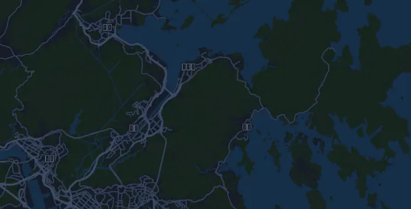

HK100 (Hong Kong 100 Ultra) 95,3 km
- Distance
- 95,3 km
- Højdemeter
- ↑ 5.950 m
- Højeste punkt
- 920 m o.h.
- Underlag
- Terræn og sti
- Karakter
- Bjergrig
- Væskedepoter
- 10
Højdeprofil
Forbered dig med Mila
Mila er en løbecoach i en app. Lægger du et løb ind i din plan, planlægger coachen ugerne frem til start efter din form og giver dig en tidsprognose og en plan for tempo, væske og energi på ruten.

Den rette træning. Den rette dag.
Ruten

Om ruten
HK100 (Hong Kong 100 Ultra) er et trailløb på 95,3 km i Pak Tam Chung, Sai Kung, Hongkong, Hongkong. Ruten har 5.950 højdemeter stigning og 5.493 højdemeter fald, 62 m pr. km, og regnes dermed som bjergrig. Det højeste punkt ligger 920 m o.h. og det laveste 0 m o.h.
Den største stigning begynder ved km 86,1: 371 højdemeter på 2,6 km med 14,4 % i snit, op til 769 m o.h. I alt har ruten 45 stigninger på mindst 25 højdemeter; den sidste begynder ved km 89,2.
Arrangøren har 10 væskedepoter langs ruten, det første ved km 10,0 og det sidste ved km 87,0.
I Mila-appen beskriver coachen ruten i detaljer på dit sprog og planlægger dit tempo og din energi til den.
Stigninger
| Begynder ved | Længde | Højdemeter | Hældning | Top (m o.h.) |
|---|---|---|---|---|
| km 0,1 | 1,5 km | 94 m | 6,3 % | 100 |
| km 4,0 | 1,6 km | 76 m | 4,7 % | 126 |
| km 5,7 | 170 m | 26 m | 14,9 % | 134 |
| km 9,2 | 1,2 km | 58 m | 4,9 % | 109 |
| km 10,8 | 2,1 km | 292 m | 13,9 % | 302 |
| km 15,0 | 770 m | 38 m | 4,9 % | 131 |
| km 16,0 | 130 m | 26 m | 19,1 % | 137 |
| km 16,2 | 230 m | 29 m | 12,5 % | 153 |
| km 16,6 | 420 m | 54 m | 12,8 % | 192 |
| km 18,6 | 550 m | 28 m | 5,0 % | 35 |
| km 19,2 | 630 m | 57 m | 9,0 % | 85 |
| km 21,3 | 950 m | 25 m | 2,6 % | 32 |
| km 22,5 | 1,2 km | 141 m | 11,6 % | 154 |
| km 25,4 | 1,6 km | 117 m | 7,3 % | 125 |
| km 27,5 | 1,8 km | 281 m | 15,7 % | 408 |
| km 33,3 | 1,2 km | 74 m | 6,1 % | 163 |
| km 35,5 | 1,9 km | 67 m | 3,6 % | 136 |
| km 37,6 | 930 m | 37 m | 4,0 % | 130 |
| km 42,4 | 2,1 km | 303 m | 14,4 % | 315 |
| km 45,1 | 470 m | 27 m | 5,7 % | 339 |
| km 46,3 | 600 m | 58 m | 9,6 % | 265 |
| km 47,5 | 960 m | 204 m | 21,2 % | 369 |
| km 51,1 | 1,8 km | 191 m | 10,4 % | 267 |
| km 53,6 | 2,3 km | 326 m | 13,9 % | 550 |
| km 59,4 | 1,9 km | 161 m | 8,6 % | 472 |
| km 62,8 | 910 m | 95 m | 10,4 % | 440 |
| km 64,1 | 140 m | 25 m | 18,3 % | 403 |
| km 64,5 | 330 m | 34 m | 10,4 % | 416 |
| km 64,9 | 710 m | 96 m | 13,6 % | 505 |
| km 67,5 | 580 m | 115 m | 19,7 % | 413 |
Før start
Væskedepoter
| Ved | Her er |
|---|---|
| km 10,0 | ikke oplyst |
| km 17,0 | ikke oplyst |
| km 28,0 | ikke oplyst |
| km 36,0 | ikke oplyst |
| km 44,0 | ikke oplyst |
| km 52,0 | ikke oplyst |
| km 65,0 | ikke oplyst |
| km 74,0 | ikke oplyst |
| km 80,0 | ikke oplyst |
| km 87,0 | ikke oplyst |
Ofte stillede spørgsmål
Hvornår løbes HK100 (Hong Kong 100 Ultra) 95,3 km?
HK100 (Hong Kong 100 Ultra) 95,3 km løbes lørdag den 23. januar 2027. Tjek dato og starttid hos arrangøren.
Hvor langt er HK100 (Hong Kong 100 Ultra) 95,3 km, og hvor mange højdemeter er der?
Løbet er 95,3 km langt med 5.950 højdemeter stigning og 5.493 højdemeter fald. Det højeste punkt ligger 920 m o.h.
Hvordan er ruten på HK100 (Hong Kong 100 Ultra) 95,3 km?
Ruten regnes som bjergrig, med 62 højdemeter pr. km i snit. Den har 45 stigninger på mindst 25 højdemeter; den største begynder ved km 86,1: 371 højdemeter på 2,6 km. Ruten går fra start til et mål et andet sted. Underlaget er terræn og sti.
Er der væskedepoter på HK100 (Hong Kong 100 Ultra) 95,3 km?
Ja. Arrangøren har 10 væskedepoter: km 10,0; km 17,0; km 28,0; km 36,0; km 44,0; km 52,0; km 65,0; km 74,0; km 80,0; km 87,0.
Hvordan fordeler jeg farten på HK100 (Hong Kong 100 Ultra) 95,3 km?
Gå efter en jævn indsats frem for et jævnt tempo: lad farten falde på stigningerne, hent den igen, når det flader ud, og hold igen de første kilometer. De største stigninger begynder ved km 10,8, km 42,4, km 53,6 og km 86,1. I Mila får du en tempoplan til netop denne rute efter din egen form.
Flere løb som dette
Flere løb i nærheden
- Standard Chartered Hong Kong Marathon – Marathon (42.195 km)17. januar 2027 · Nathan Road, Tsim Sha Tsui, Kowloon, Hongkong
- Chevron Houston Marathon 42,2 km17. januar 2027 · Houston, USA
- Dubai Marathon 42,2 km17. januar 2027 · Dubai, De Forenede Arabiske Emirater
Forbered dig med Mila
Den rette træning. Den rette dag.
Oplysningerne kommer fra rutefilen og arrangørens information. Tjek dato, starttider og regler hos arrangøren.
Mila er ikke tilknyttet, sponsoreret af eller godkendt af arrangøren eller løbets sponsorer. Navne og varemærker tilhører deres ejere. Arrangør eller rettighedshaver? Bed om ændring eller fjernelse